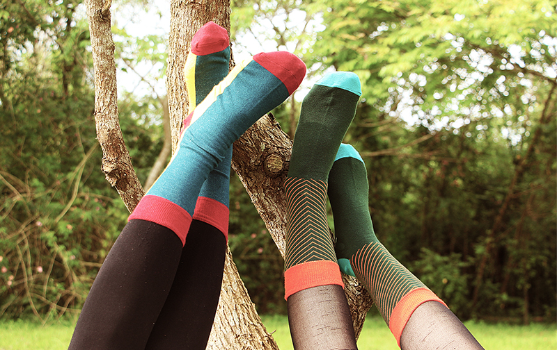
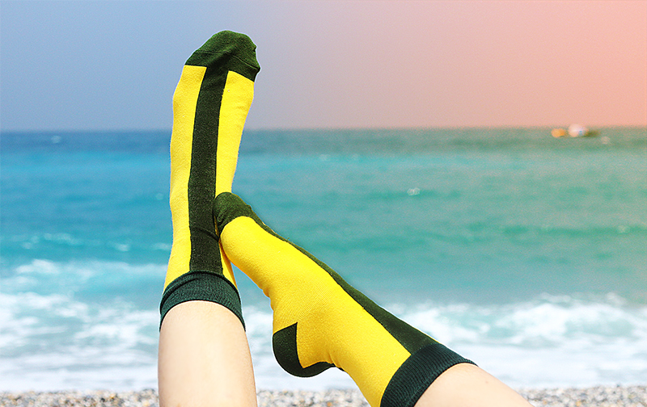
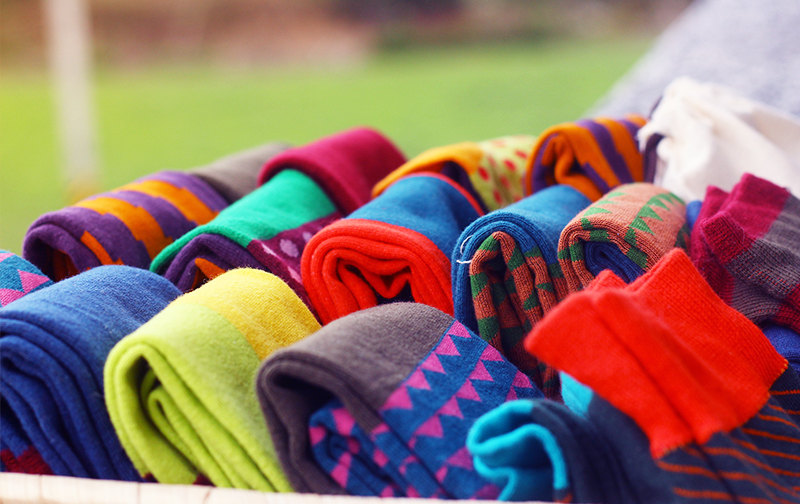
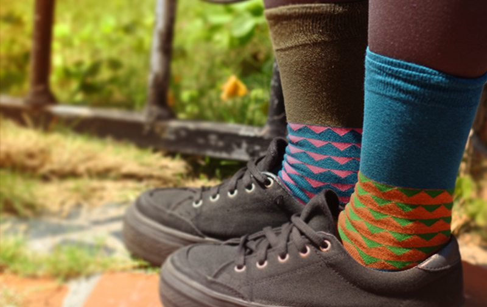
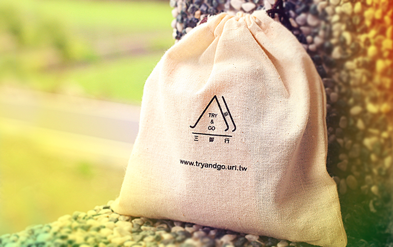
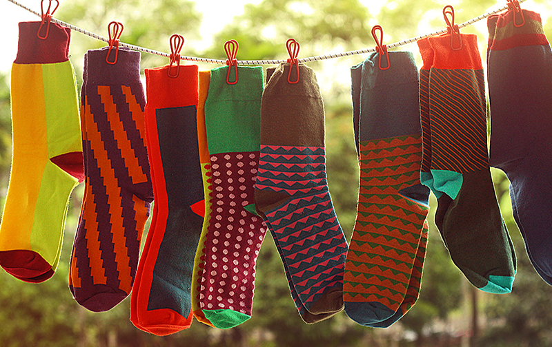

- 
- 
- 
- 
- 
- 
兩個喜愛襪子的人，希望能做出增添生活色彩的襪子。兩人三腳同心協力，嘗試各種不同的可能，穿上獨特的想法及態度，踏出每一步！
腳是人的最根部，也是站立的基礎，襪子則是腳的第二層皮膚，卻容易被忽略。生活中許多的細節都被遺忘，讓這些細節都有屬於自己的故事，使生活多一些樂趣。
給害羞人的腳，適當點綴整體造型，雖然豐富但不複雜，搶眼卻不搶鋒頭。就像隱藏在褲管與裙子裡的發光物 ，簡單、特別又實穿。
彰化社頭鄉為襪子的故鄉，製作絕大多數在台灣的襪子，編織 人工縫合 定型等過程都是經過工廠的細心檢查，品質保證。
紗線多選擇以舒適棉線製造，其次為尼龍紗，讓襪子擁有美麗的顏色。襪子針數為200針，可以細緻做出圖案。
襪子結構分為兩層，底紗與面紗，底紗是為了讓襪子有彈性，材料為彈性纖維，而大部份主要面紗為為棉紗，使用在較容易出汗的腳底等部位，棉紗除了能夠讓悶悶的腳丫深呼吸，也比較吸汗！圖案部份為尼龍紗，使用尼龍彈性紗代替棉紗，以維持襪子彈性與更增加色彩飽和度，每雙襪子穿起來清爽又亮眼！
Copyright ⓒ 2012 TRY&GO.